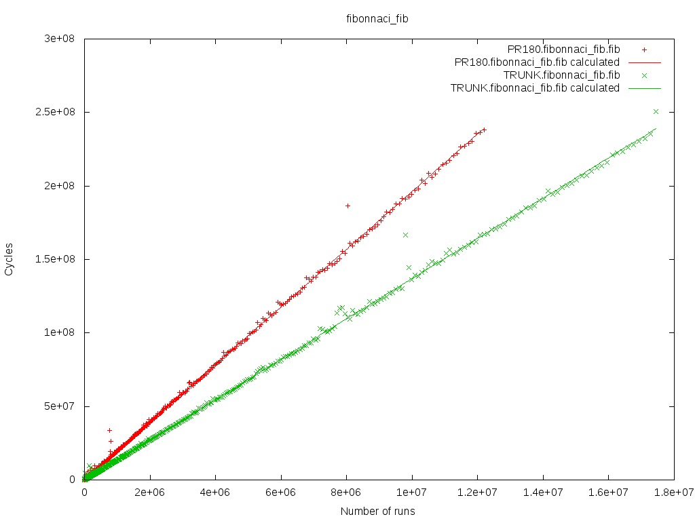

operf-micro
operf-micro is a small tool coming with a set of micro benchmarks for the OCaml compiler. It provides a minimal framework to compare the performances of different versions of the compiler. Bigger benchmarks are also available using another tool, operf-macro.
Online Resources
| operf-micro on Github | Latest sources in the official GIT repository |
1. Installation
1.1 Install using OPAM |
1.2Build from Sources |
|
|
|
If you download the sources from Github, you can use the following
instructions to build and install
|
2. Basic Usage
If you are in OCaml sources, just use:
operf-micro init SomeNameForTheseTests
otherwise, create a directory for the tests and provide the bin/ directory where OCaml is installed:
operf-micro init --bin-dir $HOME/.opam/4.01.0/bin/ TestsOn-4.01.0
This command will create a sub-directory .operf in the local directory when benchmarks sources are copied, and will later be built and executed.
Now, we can build the tests:
operf-micro build
We can list the available tests:
operf-micro list
We can run a few tests, for example the ones in "list":
operf-micro run list
operf-micro runs the benchmarks several times, until the variance is low enough for the results to be significant.
Now, we can display the results:
operf-micro results TestsOn-4.01.0
and we get the output:
TestsOn-4.01.0 2015-02-04_11-45-24:
list:
group fold_left add
tail_rec: 26.18
while: 29.94
while_exn: 120.04
group fold_left add_float
tail_rec: 26.14
while: 29.82
while_exn: 118.87
group interval
direct: 22.58
tail_rec: 22.03
tail_rec_with_closure: 24.59
group map succ
direct: 25.76
closure: 29.72
tail_rec: 36.34
group rev
rec: 21.32
rev_while: 23.07
group rev_map succ
rev_map_tail_rec succ: 25.19
rev_map_while succ: 28.13
If we have done the same for another version of OCaml, for example TestsOn-4.02.0, we can compare them with:
operf-micro compare TestsOn-4.01.0 TestsOn-4.02.0
Or you could plot the data of the bench for the runs:
operf-micro plot list TestsOn-4.01.0
TestsOn-4.02.0This is the kind of results you will get :
3. Advanced usage
This is an advanced description of every command you can run in operf-micro.
3.1 init
This command allow you to initialized your run of benchmarks.
Usage: operf-micro init [<args>] <name> initialize the .operf directory.
- --bin-dir: allows you to give the path to the bin/ directory where OCaml is installed. You can choose to run operf-micro directly in this directory and ommit this argument
- -I path: you can add a path to a directory containing new benchmarks
- name: you need to give a name to your run. This will later be useful to compare different runs
This will create a sub-directory .operf in the local directory where different files will be copied or created :
- a config file will be created. This file contains the name and the OCaml directory
- some base files will be copied
- the default benchmarks will be copied
- the benchmarks added with -I and the benchmarks in
$(HOME)/.operf/micro/benchmarks/will be copied
3.2 build
Once you have initialized your .operf directory is ready to be built.
Usage: operf-micro build --ccopt s add ocamlopt argument
This command will build the benchmarks in your .operf directory. There are few steps :
- recover the name and OCaml bin directory from the config file
- load the different paths in the context (ocamlopt, ocamlrun,...)
- compile the operf sources files
- compile each bench
3.3 check
Usage: operf-micro check [>paths<] Typecheck benchmarks
This option is here to help create your own benchmark. It will run the init and build phase on the benchmarks given whithout taking care of the default benchmarks.
3.4 list
This will list every benchmarks that have been copied during the initialization phase.
If the benchmark have been built then operf-micro will print every functions registered.
3.5 run
Usage: operf-micro run
- --time-quota t: limit the time
- --different-values n: number of different values on which functions are evaluated
- --long: allow running long test
- --longer: allow running longer test
- --output: directory where .result files will be recorded
You can give a name to run the benchmark of your choice or all benchmark by omitting a name.
This will prepare the command to run the benchmark then run it and save different informations in a temporary file (number of runs, number of cycles, gc stats...). This temporary file will then be used to generate a .result file. This is the file we will read when printing the results.
3.6 clean
This command will remove the .operf directory. You will need to start from the initialization phase to run benchmarks.
3.7 results
This command will print the results of your runs.
Usage: operf-micro results [<names>] if no name provided, list recorded results, otherwise print last results --selected s run benchmark s. All are run if none is specified --more print min,max and standard error infos
If you don't give any name, you will be displayed the list of your
runs by their name with the date for each test you made and the
name of the function you tested. These informations are retrieved
from the $(HOME)/.operf/micro/ directory.
If you give the name of a run, we retrieve the informations in the corresponding .result file and display the function name and a score.
You can use the option more to display some additional informations.
3.8 compare
Usage: operf-micro compare [<names>] comparisons between runs --std-error : print the standard error for each bench
This command will compare the selected runs. If no runs are given, operf-micro will display all the runs.
All the results are gathered and we will compare the score of a bench tested in several different runs.
operf-micro compare test1 test2
test1 test2
fft 1.00 1.00
fib 1.06 0.97
Here we have two runs: test1 and test2. Both of them have tested the fft and the fibonnaci benchmarks. We compare the score for each benchmark.
You can use the option std-error to display some additional informations.
3.9 plot
Usage: operf-micro plot bench_name<.group_name> [<run_name>] if no runs name is provided, plot for all run, otherwise plot the data on the given runs --with-fun plot each functions of the bench --png choose png output
This command will plot the data of the selected bench for the given runs (or all runs). By default operf-micro will plot all the functions of a group in one graph. Since you can have a large number of functions and this can make a graph hard to read, you can choose to plot a function in one graph. You can also select one group to be plotted instead of all the groups of a bench.
Operf-micro offers the possibility to generate png of the graphs.
3.10 do all
This command will do every steps from initialization to displaying the results of the run.
You can specify any paramaters that you would if you would have called each step one by one.
4. Write your own bench
4.1 Writing your bench
We are going to take the fibonacci benchmark as an example to explain how to write a bench for operf-micro.
A benchmark is a directory which contains a benchmark.ml file or serveral ml files and a benchmark.build file. The .build file describes how to build the benchmark.
The file benchmark.build should have the following format :
{ files: ["file1.ml", "file2.ml"],
link: ["lib1","lib2"] }
Our example just contains a benchmark.ml
let rec fib n = if n < 2 then 1 else fib(n-1) + fib(n-2)
This is the function that our bench is going to run.
let results =
[|1; 1; 2; 3; 5; 8; 13; 21; 34; 55; 89; 144; 233; 377; 610; 987; 1597;
2584; 4181; 6765; 10946; 17711; 28657; 46368; 75025; 121393; 196418;
317811; 514229; 832040; 1346269; 2178309; 3524578; 5702887; 9227465;
14930352; 24157817; 39088169; 63245986; 102334155; 165580141; 267914296;
433494437; 701408733|]
This is an array containing the 44 first fibonnaci numbers. Later operf-micro will use this to check that our function is correct.
let prepare i = i
This function allows to generate our argument. Here we just need an integer so the function is the identity.
let run i = i, fib i
This is the function that will run our bench. Given an argument it will return the argument and the result of the run on that argument.
let check (i, n) =
if n = results.(i)
then Micro_bench_types.Ok
else Micro_bench_types.Error
("fib " ^ (string_of_int i)
^ " returned " ^ (string_of_int n)
^ " instead of " ^ (string_of_int results.(i)))
This is the function that will test if our bench is correct. It checks the output against the results array. If it doesn't match we give a message explaining where it went wrong.
let functions =
[ "fib", Micro_bench_types.Int (run, prepare, check,
[ Micro_bench_types.Range (0, 28), Micro_bench_types.Short;
Micro_bench_types.Range (29, 40), Micro_bench_types.Long;
Micro_bench_types.Range (40, Array.length results - 1), Micro_bench_types.Longer ])
]
This is where we assemble the part to make our benchmark. A benchmark is :
- a name
- your actual bench constructed with a structure including:
- a function to run your bench
run - a function to prepare your argument
prepare - a function to check your bench against the expected output
check - a list of
range * costto estimate the run time given a paramater range
- a function to run your bench
let () = Micro_bench_types.add functions
You will need to use the add function in your bench. This function register our bench so we can later executed it.
A good way to get started is to take a look at our benchmarks in operf-micro/benchmarks and file micro_bench_types.mli which contains some types and functions to help you create your benchmarks.
4.2 Add your bench
Operf-micro offers three ways to add your bench :
- Add your bench to the benchmarks dir in operf-micro sources.
- Add your bench to
$(HOME)/.operf/micro/benchmarks/ - When initializing you can use the option -I dir to add your bench.
You will need to recompile operf-micro. When using
operf-micro init your bench will be copied and
prepared to be executed.
You may need to create this directory. Operf-micro scan this
directory everytime you use operf-micro init.
operf-micro init -I mybenchdir